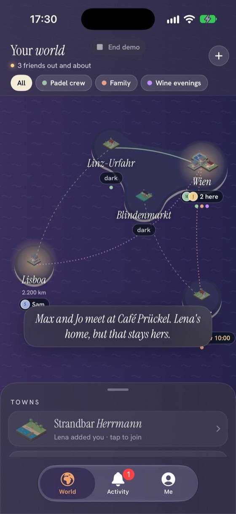
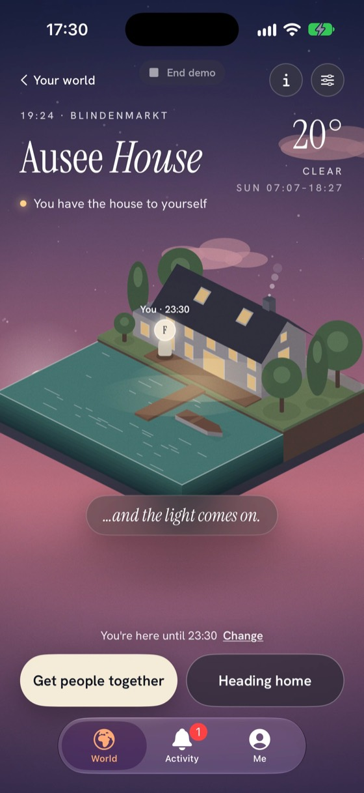

What it looks like


The reel
Placeholder: the Porchlight pitch reel (the house that builds itself, then the light comes on) goes here once the video file is in the repo.
How it was built
Designed and built with AI coding agents, from a written spec to a working app in ten days. SwiftUI for the interface, RealityKit for the dioramas, iCloud for sharing between friends.